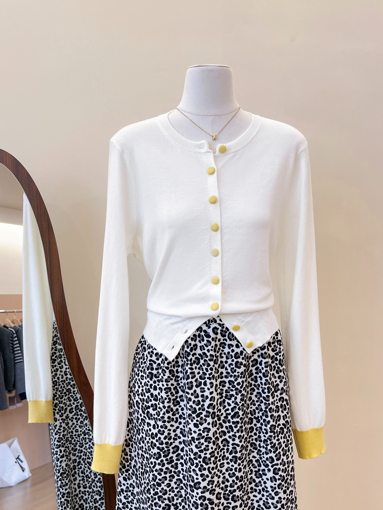
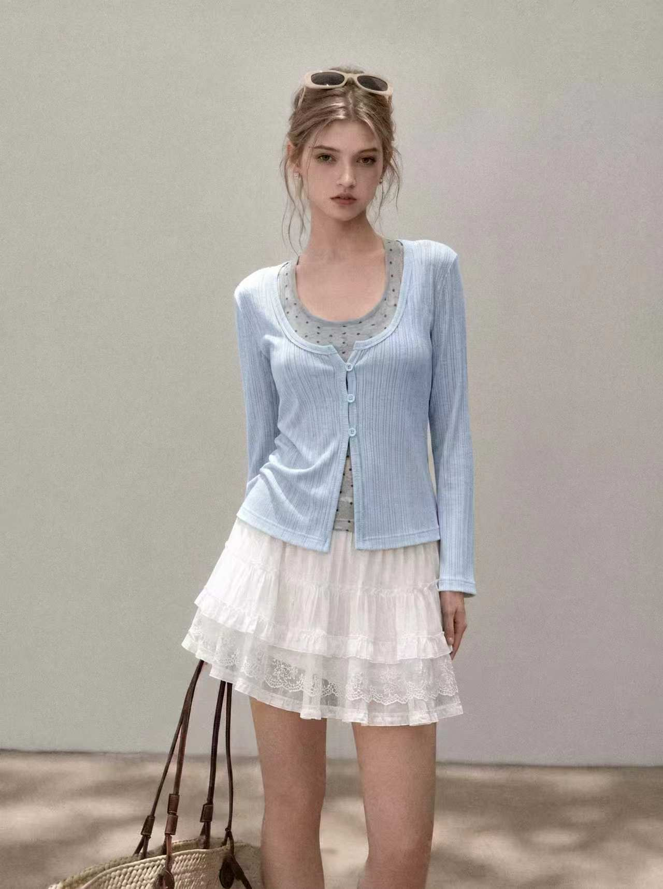
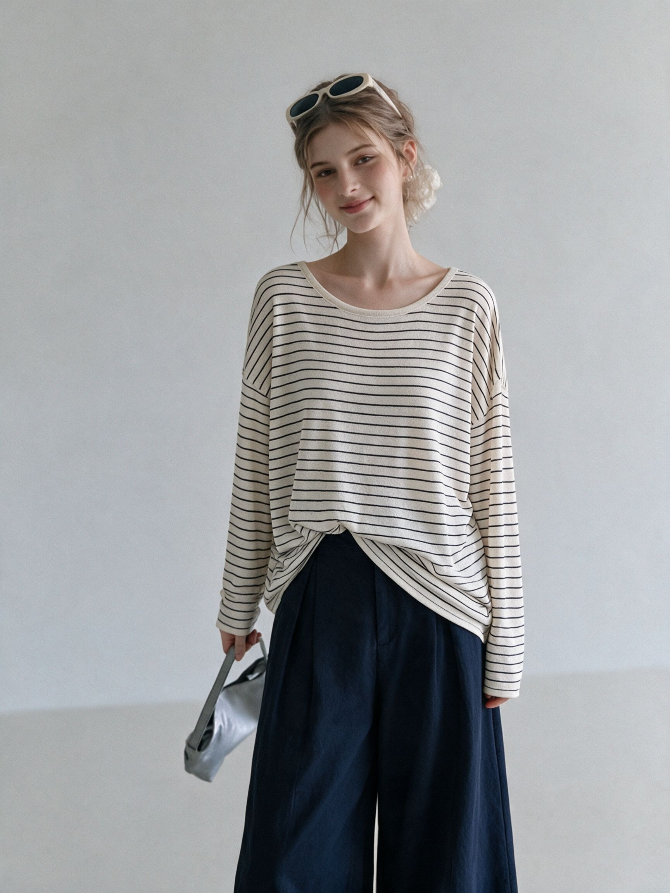
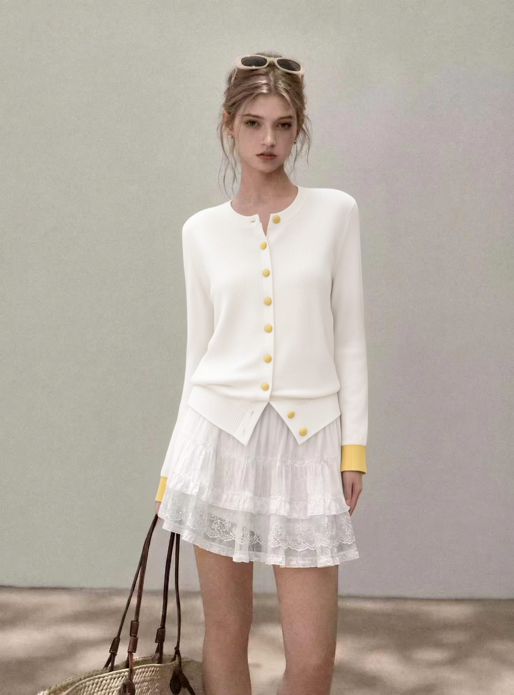
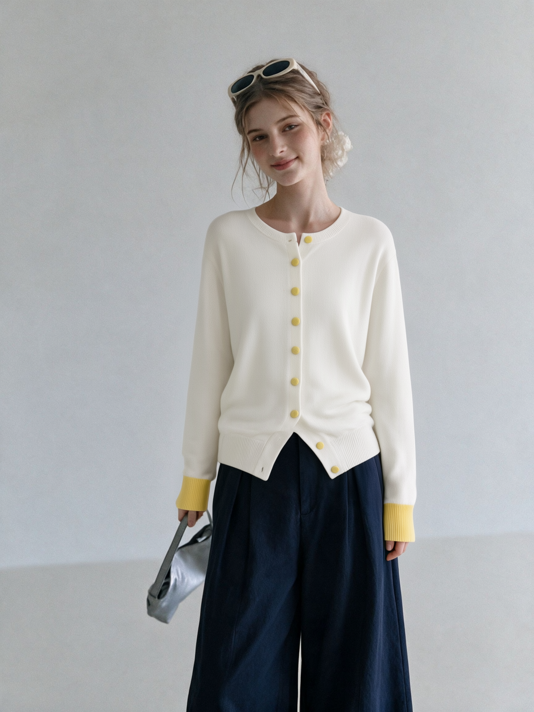
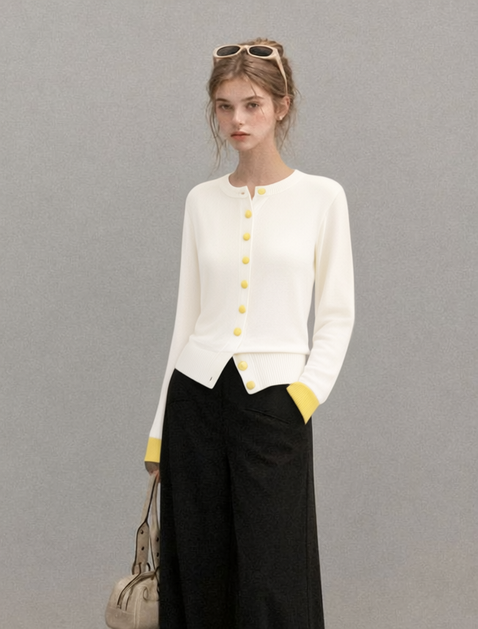
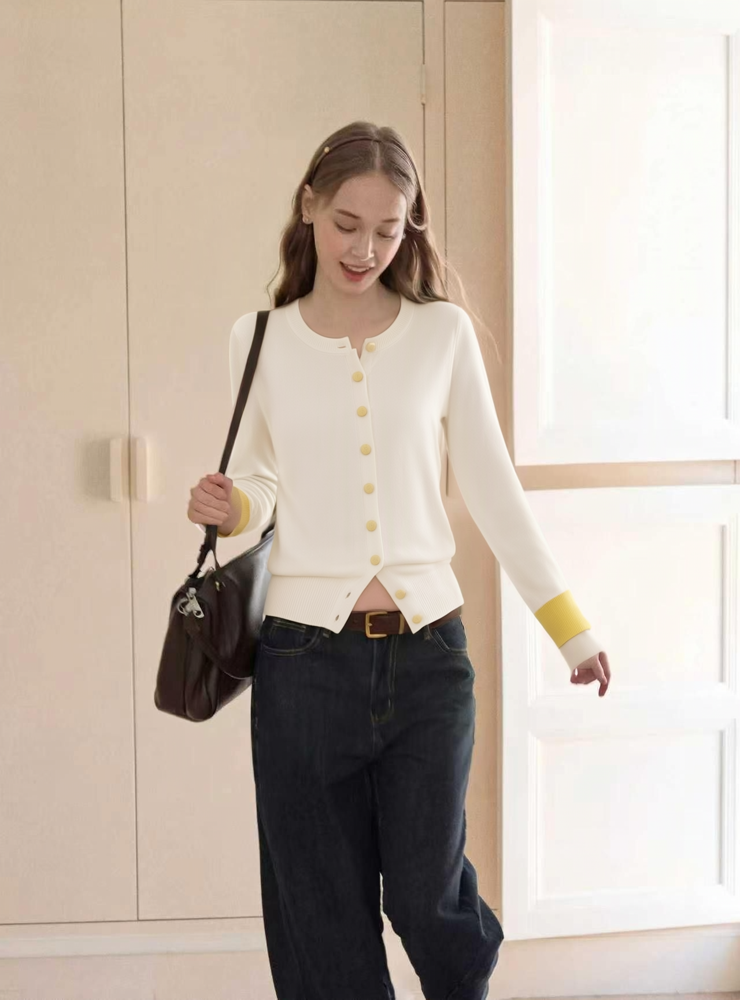
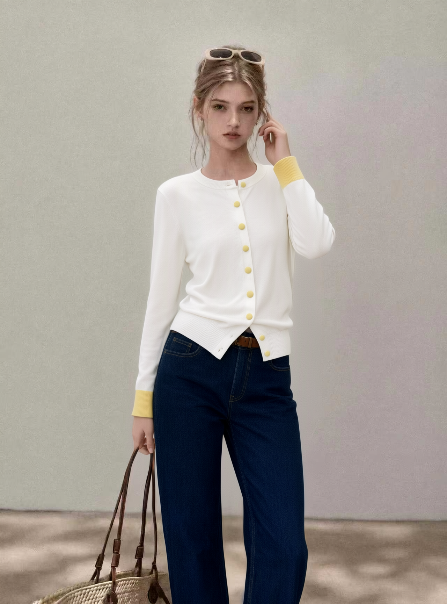

任务：给同一模特生成 5 张不同姿势的图，统一穿 brief 指定的象牙白针织开衫（clothing-test.jpeg）。
客户明文需求（source-record constraints_stated_by_client）：① 主要把控服装细节——服装细节保真是本任务核心，不是摄影美感；② 衣长与胸围是两个量化验收指标；③ 每款 5 张、同一模特；④ 姿势可在 5 张间变化。
做到的程度：5 张成品全部出图并逐张像素级验收；服装结构条款（全扣紧无内衬/双黄罗纹袖口/9 颗淡黄扣/宽罗纹下摆尖角搭位）写进 prompt 硬条款并逐张核验。衣长/胸围：客户未给尺寸表（record 明文记录），无 pass/fail 阈值；比例对照法已在 constraints_we_added 定义，本次未执行量化测量——如实标注为待办。
链路：本地 ComfyUI(8289) + qwen-image-2.1 edit + outfit-swap LoRA（euler/simple cfg1.0 steps25，resolution 跟随模特图原生尺寸）。每 take 一张模特图 + 同一张服装图 + 姿势条款 prompt。
过程：take01-04 一次出图；take05 幻觉出白色蕾丝短裙 → take05fix（seed 20261051，加下装硬锁+发丝条款）修复下装但门襟黄扣 10≠9 → take05fix2（seed 20261056）3× 特写逐颗数扣 = 9 颗整（门襟 7+搭位 2，与产品分布一致），PASS。元数据按 benchmark 红线落 meta.json（模型/prompt/seed/输入输出 SHA-256）。

服装图 clothing-test.jpeg（象牙白开衫·9 黄扣）
模特图 model-ref.jpeg
模特参考 e0542f50（take02 用）
take01 · 自然正面站立 · PASS
take02 · 保持源姿势 · PASS（左下摆旁细杂痕披露）
take03 · 保持源姿势 · PASS（608×800 源图偏小披露）
take04 · 保持姿势室内 · PASS（下摆塞腰披露）
take05fix2 · 3/4 转身 · PASS（9 扣整数）任务级明文规则逐条核验 + 统一 rubric 八维度评分。及格线：hard gates 全过且 quality_score ≥ 0.70。结论全部来自直接读图实测（find-defects-first + 关键区 2-3× 特写），推断均已标注。
偏差披露：
衣长/胸围量化对照未执行——无客户尺寸表无阈值（record 明文），比例对照法已定义；模特「同一人」约束的核实项开放。两项待办不阻塞出图合格判定，但未闭环前不宣布整体完成。